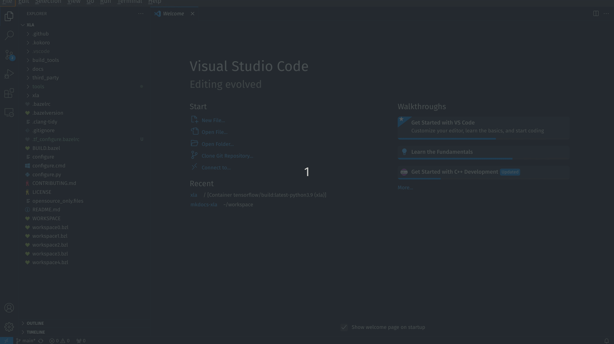

Setup Debugger
Clone and build XLA
To clone XLA
git clone https://github.com/openxla/xla.git
docker run --name xla -w /xla -it -d --rm -v $PWD:/xla tensorflow/build:latest-python3.9 bash
docker exec xla ./configure
xla. To start this container
docker exec -it xla bash
bazel build --config=dbg --test_output=all --spawn_strategy=sandboxed //xla/...
Note
Using --config=dbg flag to add debugging symbols. This flag is required by the debugger.
Compile a unit test
Best way to learning about a codebase is to run its unit tests through debugger.
To compile a unit test
bazel test --config=dbg //xla/tests:tuple_test_cpu
bazel-bin/xla/tests/tuple_test_cpu
Setup Visual Studio Code
I use VSCode debugger to debug the executable.
To debug in VSCode, install following extensions:
- C/C++
- C/C++ Extension Pack
- Dev Containers
Next, add the following lines to .vscode/launch.json
{
"configurations": [
{
"name": "(gdb) Launch",
"type": "cppdbg",
"request": "launch",
"program": "${workspaceFolder}/bazel-bin/xla/tests/tuple_test_cpu",
"args": [],
"stopAtEntry": false,
"cwd": "${workspaceFolder}",
"environment": [],
"externalConsole": false,
"MIMode": "gdb",
"setupCommands": [
{
"description": "Enable pretty-printing for gdb",
"text": "-enable-pretty-printing",
"ignoreFailures": true
}
]
}
]
}
Note
The line highlighted above says VSCode will run debugger on tuple_test_cpu. You can replace "program" field with any executable you wish to debug.
Because XLA uses docker container to execute, we need to attach docker container to VSCode before hitting debug.
To attach a running container to VSCode, press Ctrl + Shift + P > type "attach to running container" > select your running xla container (the one that you had started by docker exec -it xla bash).

Add breakpoints where required and press F5 to start debugging.
References
To clone and build XLA: https://github.com/openxla/xla/blob/main/docs/developer_guide.md
To setup debugger: https://nekodaemon.com/2021/08/04/Easy-way-to-debug-TensorFlow-XLA-Compiler-using-VSCode/